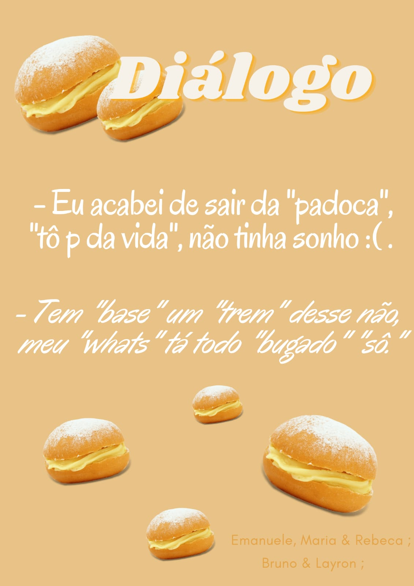
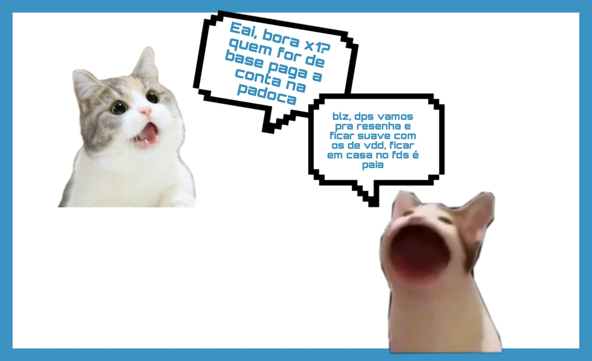
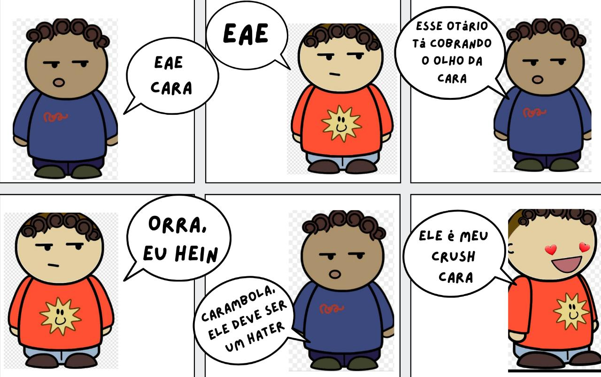

Bem vindos ao Blog do 2°A!
As Gírias são fenômenos linguísticos utilizados num contexto informal, sendo muita utilizada entre os jovens. São palavras ou frases não-convencionais segundo a norma culta, as quais são utilizadas em algumas regiões e culturas, por determinados grupos ou classes sociais.
Nessa aula os alunos foram instruidos a fazer um dialogo utilizandos as girias anteriores.
  https://drive.google.com/file/d/1MxwSaFQCT-nG7YC-WCqy0XaMRisLoUYk/view?usp=sharing
https://www.canva.com/design/DAFckSadQsM/vph5Y4K3Fzou2Ocjl1kXYQ/view?utm_content=DAFckSadQsM&utm_campaign=designshare&utm_medium=link&utm_source=viewer
https://www.canva.com/design/DAFchtSO2bs/dtjSkYJ_6VR-gKgzCP2Z3w/watch?utm_content=DAFchtSO2bs&utm_campaign=designshare&utm_medium=link2&utm_source=sharebutton
https://www.canva.com/design/DAFc0BrvLwY/4-pZAwCSYFv3gB3wzGBaTg/edit?utm_content=DAFc0BrvLwY&utm_campaign=designshare&utm_medium=link2&utm_source=sharebutton